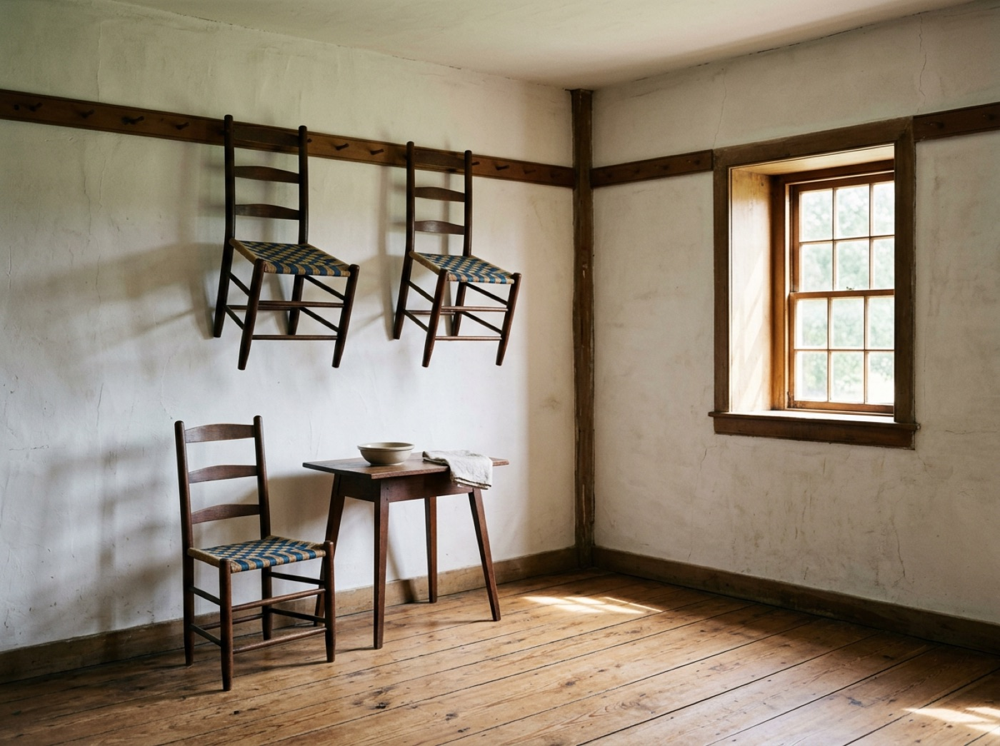
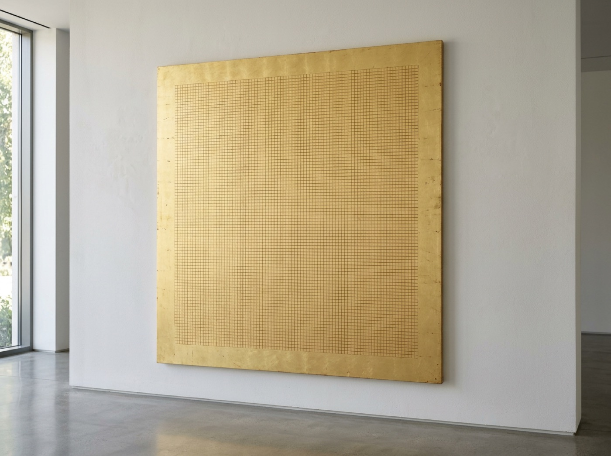
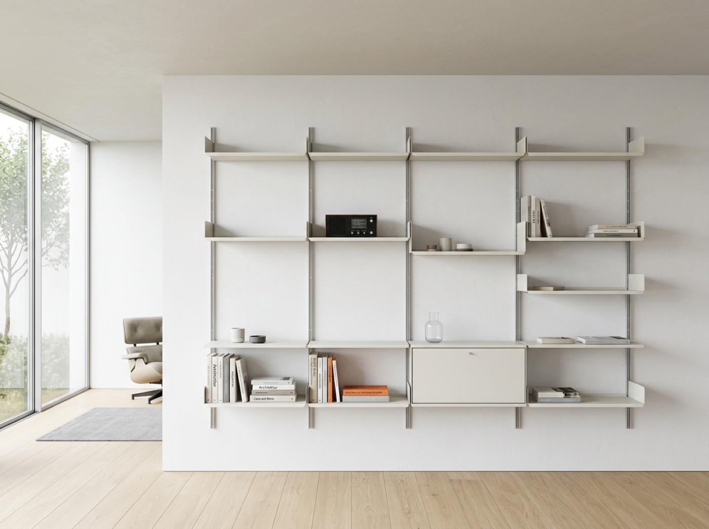
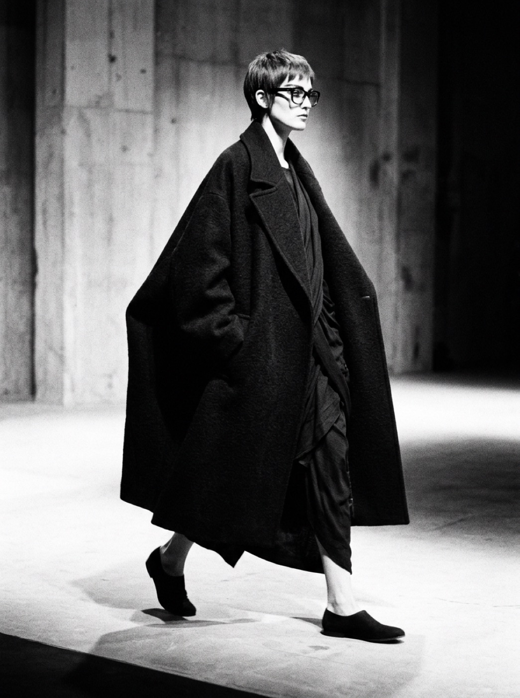

The gap between two elements is a designed object with a width and a job. This chapter trains your eye on the interval the Japanese call ma, and on the grid — the instrument that decides where every interval falls.
Salk Institute plaza· 1965 · Louis Kahn, counsel Luis Barragán · AI plate A planned garden became bare travertine on Barragán's advice; one thin rill aims the void at the Pacific. The empty center is the building's strongest element.
Kahn planned a garden between the Salk Institute's laboratory wings. Barragán told him to plant nothing: "if you put just stone, what you gain is a facade to the sky." The court stayed bare, one thin rill aimed at the Pacific.
Every design here spends emptiness on purpose.
The interval is the design
Katsura sizes every room on the ken module, a tatami mat of roughly three by six feet; sliding shoji turn the walls into adjustable intervals. Walk the veranda: the gaps arrive in rhythm, post, void, frame, void.
Katsura Imperial Villa, veranda· c. 1615–1663 · Prince Hachijō Toshihito & Toshitada · AI film Rooms dimensioned by the ken/tatami module; shoji slide to make walls into intervals. At walking pace, ma is timing as much as distance.
The Shakers wrote it into doctrine. A peg rail circles each room at door height; chairs hang when no one sits. Clear the floor, and what remains breathes.

Shaker peg rail, Mount Lebanon· c. 1820 · United Society of Believers · AI plate "Beauty rests on utility": ornament banned, chairs hung at door height when unused. The cleared floor is the composition.
A grid can shout or whisper
Müller-Brockmann placed nothing by eye. The beethoven arcs double in width, 1, 2, 4, 8, 16 units, and their segments step around an off-canvas center in 11.25-degree increments. A spacing system you can hear.
Agnes Martin ruled the opposite grid: thousands of hand-incised cells across six feet of gold leaf, invisible past arm's length. Structure can organize without announcing itself.
beethoven poster, Tonhalle Zürich· 1955 · Josef Müller-Brockmann · SVG study Arc widths and gaps double — 1, 2, 4, 8, 16 units — and segments rotate on an 11.25° module around an off-canvas center. Nothing is placed by eye.

Friendship· 1963 · Agnes Martin · AI plate A 190.5 cm square of gold leaf incised with thousands of hand-ruled cells. Across the room, one field; at arm's length, a grid at near-zero contrast.
One column, mostly margin
The material is identical on screens. Medium's 2013 reading view is four numbers: a column near 700 pixels, serif at 21 pixels, line-height 1.58, 65 to 75 characters per line. Margin out-measures text; the ratio is what "reads like Medium" meant.
The Column Is the Design
Eye Training · Jun 2013 · 4 min read
Hold a line of text to about seventy characters and the eye returns reliably to the start of the next one. Let it run wider and the return sweep starts to miss; cut it shorter and the rhythm turns choppy. The column width is doing the reading with you.
Everything outside the column is margin, and the margin is doing the work a sidebar would undo. Nothing competes with the line you are on. That is the whole layout: a width, a size, a leading, and a measure.
Medium reading view · 2013. One centered column floating in empty margin — no sidebar, no rail, no related links; one image breaks the column to mark a section. FF Tisa approximated with Literata. Built live in CSS — inspect it.
Space is the divider
Things 3 draws no separator lines. Rows group by spacing rhythm; a project heading sits in a band of white several text-lines tall. Wertheimer named it in 1923: the law of proximity. Put the lines back with the button — louder, not clearer.
★Today
Review chapter plates
Email printer about paper stock
Morning run
Eye Training
Fix digest table spacing
Book Kyoto flights
Things 3, Today · 2017. No divider, no card border: a tall band of white and one small project heading make the groups. Apple Design Award, June 2017. SF Pro approximated with system-ui. Built live in CSS — inspect it, check a task, toggle the lines.
The grid encodes the content
A grid can encode the content's anatomy. Stripe locked each endpoint into one row: prose on white beside its code example on dark navy, scroll-synced so explanation and answer never separate. Slate copied it in 2013; two panes became the grammar of API documentation.
Create a charge
To charge a credit card, create a new charge object. Each charge is identified by a unique ID and can be retrieved or refunded later.
Arguments
amount required
A positive integer in cents representing how much to charge the card.
currency required
Three-letter ISO currency code, e.g. usd.
description optional
An arbitrary string attached to the object, shown alongside the charge.
Stripe API reference · 2011. Three locked regions: nav rail, white prose column, dark navy code pane — one grid row per endpoint, language tabs above the code. Original sans approximated with system-ui; code in IBM Plex Mono. Built live in CSS — inspect it.
One module, repeated
When a grid must hold unrelated things, repeat one container. Springboard masks sixteen functions into identical 57-pixel rounded squares on a fixed four-column grid; the dock holds exactly four, splitting always from sometimes by position alone.
Rams aimed the 606 at invisibility: one E-track profile carries every shelf without tools; the structure recedes to thin lines and the eye reads the books.
iPhone OS 1 Springboard· 2007 · Apple — Forstall, Chaudhri, Anzures · AI plate Sixteen functions, one container: identical glossy rounded squares on a fixed 4-column grid, with a reflective dock anchoring exactly four below.

Vitsoe 606 Universal Shelving· 1960 · Dieter Rams · AI plate One anodised E-track profile and a notched pin carry everything, tool-free; shelf edges read as thin lines. Sold virtually unchanged since 1960.
Air in the object
An object can hold space the way a page holds margin. The Pagoda's concave hardtop is stiff enough for pencil-thin pillars and tall glass; the roof floats over air. Yamamoto cut cloth the same way: volume held off the body, color deleted until only the interval remains.
Mercedes-Benz 230 SL "Pagoda"· 1963 · Paul Bracq & Béla Barényi · AI plate The patented concave hardtop adds rigidity, buying pencil-thin pillars and tall side glass; the roof reads as a canopy over open space.

Yohji Yamamoto, Paris debut· 1981 · Yohji Yamamoto · AI plate Oversized black cloth cut to hold air away from the figure: with color removed, silhouette, drape, and negative space are the only variables.
Fifteen stones, fourteen visible
The strictest version is the oldest: fifteen stones in five clusters, placed so any seat on the veranda shows only fourteen. The raked field has held visitors five hundred years. The void does the holding.
Ryōan-ji karesansui garden· c. 1480 · attrib. circle of Sōami, Kyoto · AI plate Fifteen stones in five clusters (5-3-3-2-2) in raked gravel; from any seated point only fourteen are visible. The stones are punctuation; the gravel is the composition.
The takeaway
Whitespace is material, not absence — the grid decides where the emptiness goes, and ma is why it means something.
In your systems
Racing-green's digests group with hardware: hairline rules, deep green panels, zero radius. Wertheimer says space could do much of that work unpaid. Open one Hermes digest. Is every gap a step on one spacing scale, or improvised per component? Would doubling the space between groups let you delete half the rules, as Things 3 did? Density can be a brand; it cannot be an accident.
Five-minute exercise
Take your densest view — a Hermes digest table is ideal. Snap every margin and padding to the nearest step of a single 8px-based scale, then double the outermost padding. Screenshot before and after and squint-compare: the content didn't change, but the grouping did.
Vocabulary
Ma (間) — the charged interval: emptiness that creates relation. Japanese and Zen aesthetics; Japan House LA, "The Space in Between."
Modular grid — spacing derived from a system, not taste; the grid as "a will to order." Josef Müller-Brockmann, Grid Systems in Graphic Design, 1981.
Law of proximity — spacing is grouping: things near each other read as one thing. Max Wertheimer, Gestalt principles, 1923.
Macro vs micro whitespace — page-level emptiness versus the gaps inside components; "start with too much white space." Adam Wathan & Steve Schoger, Refactoring UI, 2018.
Sources: Müller-Brockmann, Grid Systems in Graphic Design (1981) · Wertheimer, Laws of Organization in Perceptual Forms (1923) · Wathan & Schoger, Refactoring UI (2018) · Japan House Los Angeles, "The Space in Between" · Bruno Taut on Katsura (1933).